1 / 6
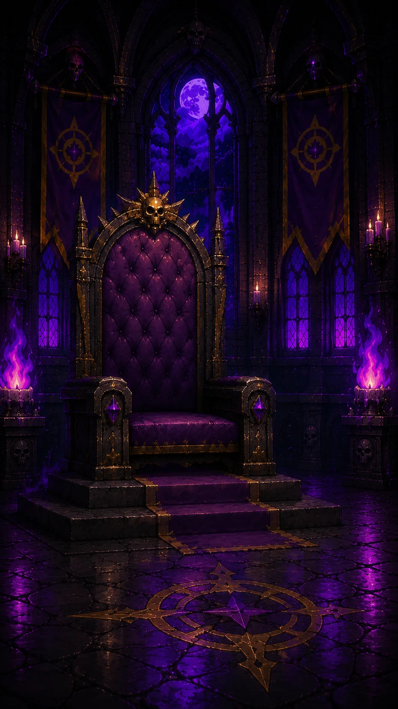
Der Ritter betritt den Thronsaal. Vor ihm ruht die Glaskugel, in der die Magie der Sinne gefangen ist.
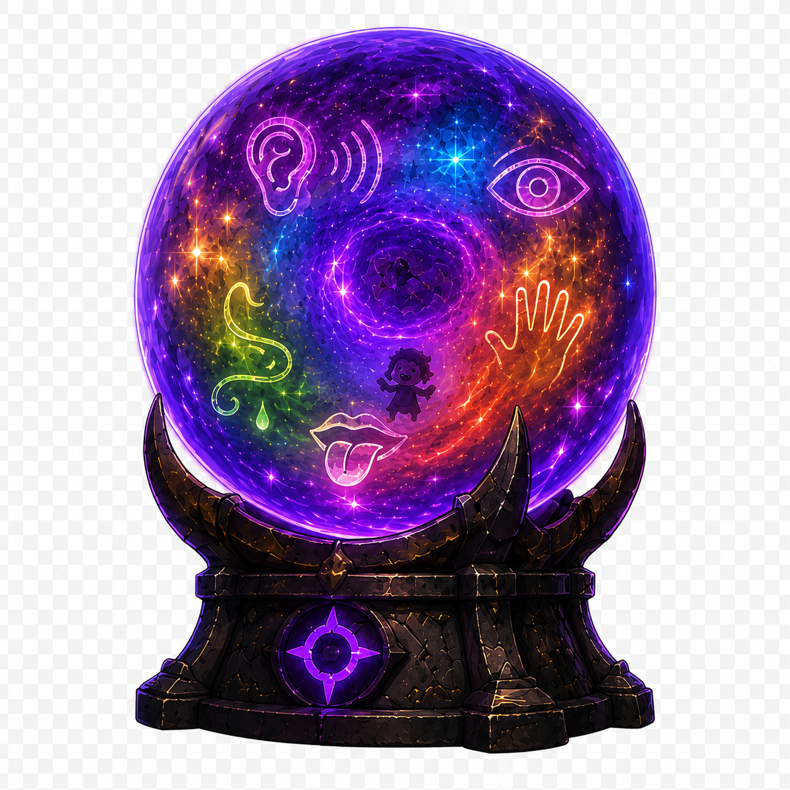
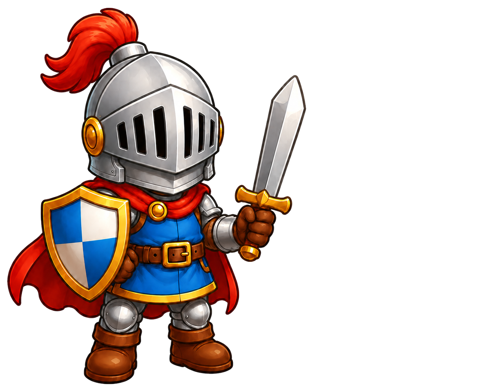



Die früheren Gegner und der Ritter entdecken, wie die Sinne verbinden, schützen und gemeinsame Freude möglich machen.
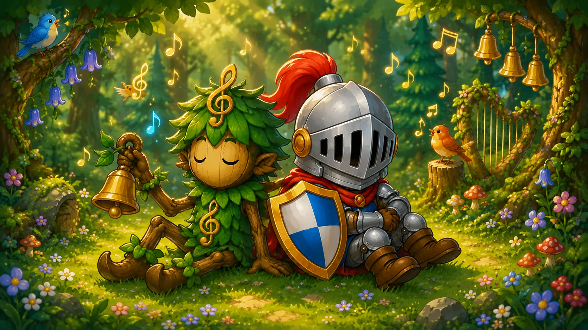
Ritter und Waldgeist sitzen Rücken an Rücken und lauschen dem Zwitschern der Vögel. Der Hörsinn hilft ihnen, feine Klänge wahrzunehmen, Ruhe zu finden und sich miteinander verbunden zu fühlen.
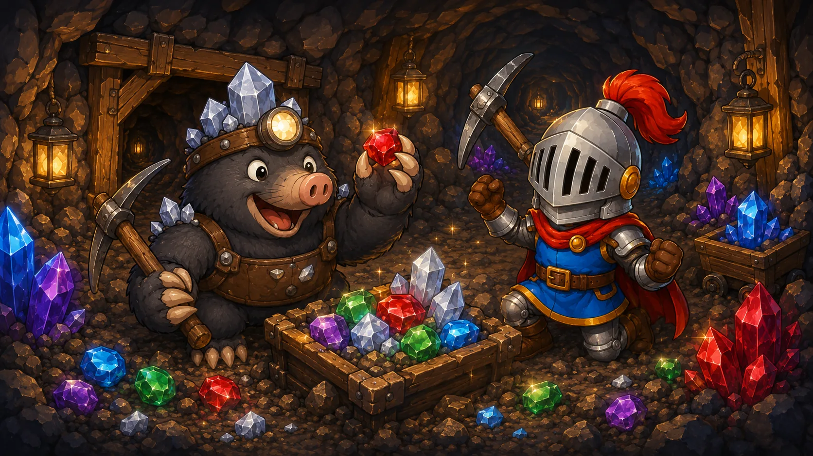
Beim gemeinsamen Graben entdecken Ritter und Maulwurf Diamanten, Rubine und Smaragde. Mit Händen und Werkzeugen ertasten sie Stein, Erde und Kristalle – und erleben, wie der Tastsinn Orientierung und Sicherheit gibt.
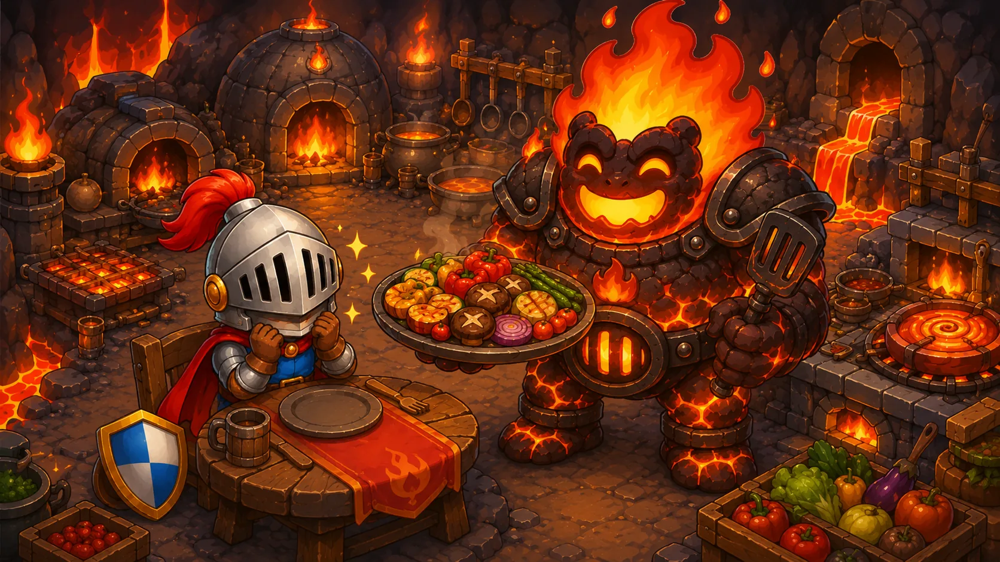
Der Feuergolem serviert ein großes Festmahl, und beide genießen die vielen Geschmäcker. Der Geschmackssinn schenkt Genuss, weckt Erinnerungen und kann zugleich davor warnen, wenn etwas zu scharf oder verdorben ist.
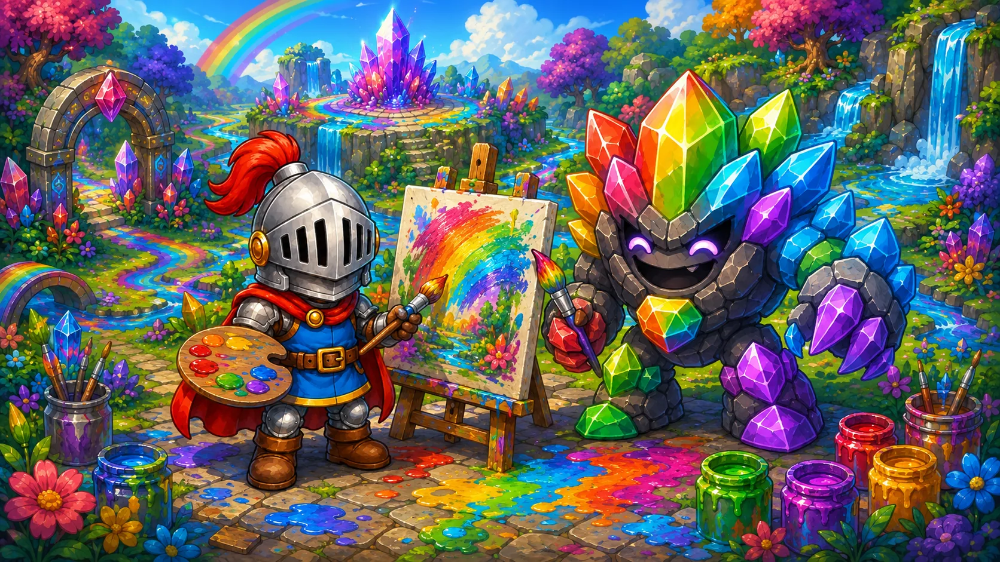
Vor der Leinwand malen Ritter und Farbgolem gemeinsam ein buntes Bild. Mit dem Sehsinn erkennen sie Formen, Farben und Unterschiede – und verwandeln ihre Eindrücke in Fantasie und Freude.
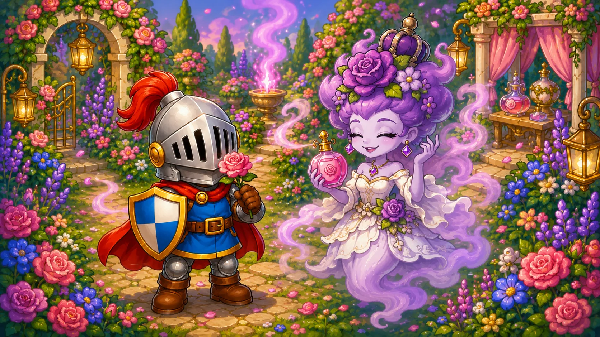
Im blühenden Garten ist der Duftgeist wieder freundlich und hell, aber noch immer als Geist erkennbar. Gemeinsam riechen beide an Rosen und Kräutern. Düfte können beruhigen, Erinnerungen wecken und vor Rauch oder verdorbenem Essen warnen.
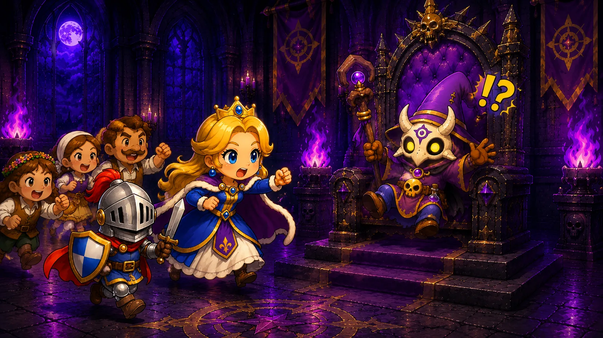
Prinzessin, Ritter und Bürger kommen gemeinsam in das Zauberschloss. Sie sehen den traurigen Magier auf seinem Thron und erkennen, dass Aufmerksamkeit und Mitgefühl helfen können, auch hinter Angst und Wut andere Gefühle zu entdecken.
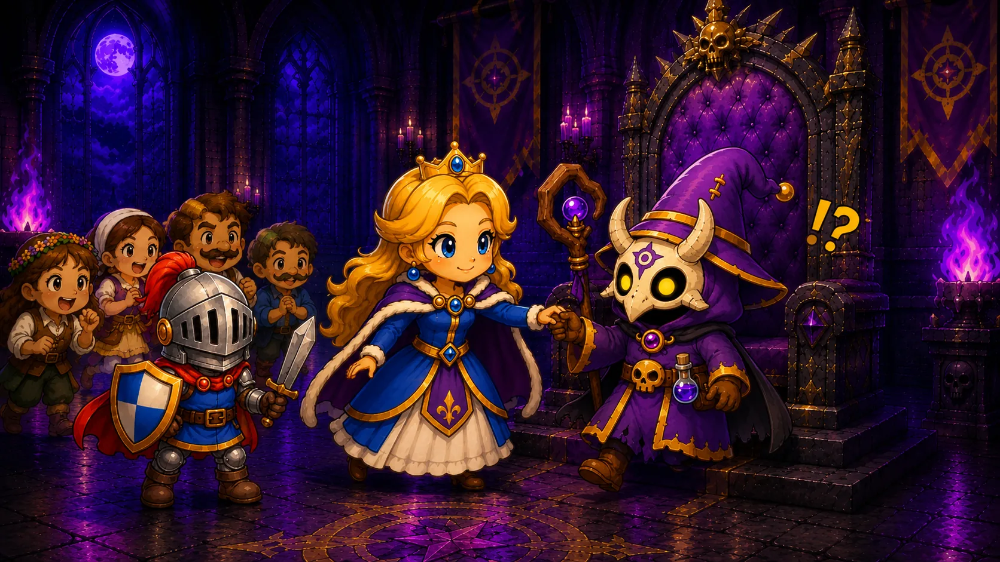
Die Prinzessin reicht dem überraschten Magier die Hand und lädt ihn ein mitzukommen. Berührung, Blickkontakt und Stimme vermitteln Vertrauen – unsere Sinne helfen uns, Gefühle anderer Menschen zu verstehen.
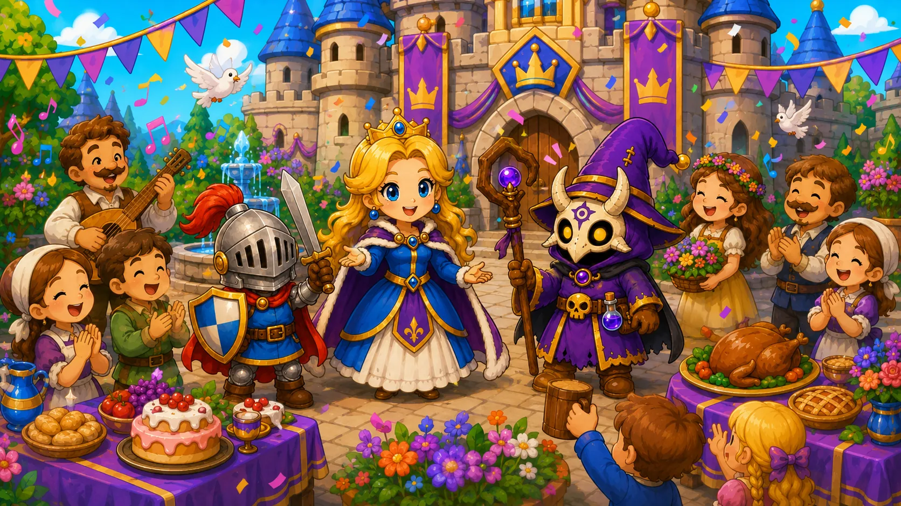
Im Königreich wird gemeinsam gegessen, musiziert und gelacht. Farben, Klänge, Düfte, Geschmäcker und Nähe lösen Freude und Geborgenheit aus. Der Magier erlebt, dass Gemeinschaft stärker ist als Neid und Einsamkeit.
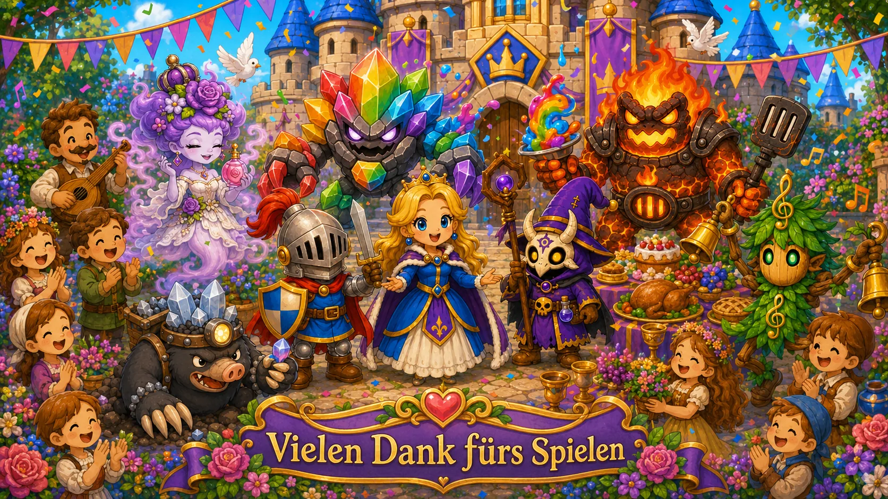
Unsere Sinne verbinden uns mit der Welt und mit anderen Menschen. Sie lassen uns Schönheit, Musik, Nähe, Geschmack und vertraute Düfte erleben. Dadurch entstehen Freude, Sicherheit, Neugier und Erinnerungen. Gleichzeitig warnen uns unsere Sinne vor Gefahren und helfen uns, aufmerksam und bewusst zu handeln. Bewahre dir deshalb einen offenen Blick, ein gutes Gehör, eine feine Nase, Neugier auf Geschmack und ein achtsames Gefühl für deine Umgebung.